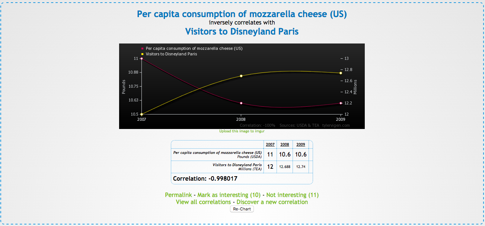
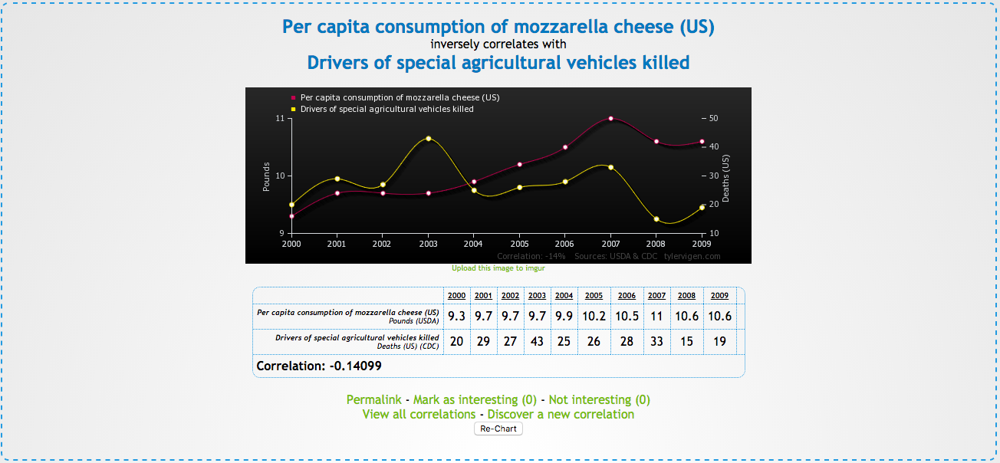

Correlations between mozzarella cheese and various other things
Correlation between mozzarella cheese and civil engineering doctorates

Here we see a very strong correlation between mozzarella cheese and civil engineering doctorates.
Correlation between mozzarella cheese and visitors to Disneyland Paris

and as we have doctors of civil engineering eating more mozzarella cheese, fewer people will be in Paris for disneyland.
Correlation between mozzarella cheese and death by falling down stairs

and these highly educated people unfortunately no longer have room in their brains to safely climb the stairs
Correlation between mozzarella cheese and deaths of drivers of special argricultural vehicles

Drivers of special agricultural vehicles need not worry about consuming mozzarella cheese while driving cows from field to field
Overall conclusion: Mozzarella Cheese is Awesome!!
Interested in some other intersting correlations, visit this page
all images and facts pulled from: TylerVigen.com